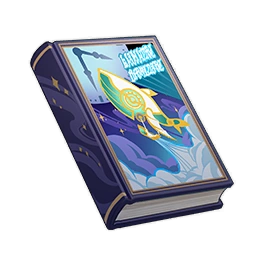

Time Trekker¶

Vol. 1¶
Note
A Fontainian science fiction novel published by The Steambird. It tells the story of an engineer's travels using a time machine.
This is a story from many years ago. After the evening banquet, Ms. Aviva (who today would be Lady Nenonen) was, as always, theatrically grousing to us about the all-too-swift march of science. Though her grasp on engineering is even less firm than her knowledge of Watatsumi Island's soil quality (and of course, she knows nothing about the latter either), but self-proclaimed interest in engineering was in vogue amongst some ladies and gentlemen at the time.
"Our ancestors had already conquered this land thousands of years ago," she said as she cleared her throat, twirling her jade-plumed and blue-gem-encrusted folding fan while endeavoring in vain to wear a visage of despondency. "And a few hundred years ago, they conquered the oceans with ease using new diving equipment. Today, some noble young folk have suddenly got it in their heads to use a so-termed gravimeter to break free from the earth's shackles and conquer the skies — and surely, I fear, their dream may yet become reality in the near future."
"Indeed, it is just as you say. Humans — ah, what a mighty and energetic species, with such great wisdom! No matter the circumstances, humans ever seek to change their living conditions with unimaginable passion," The Steambird editor immediately opined. "In truth, when it comes to mechanical engineering and theory, humanity is already on par with the creator. They have conquered most of the natural world, and by their will, they can shape this world anew."
"Ah, that's... not what I meant to say," Ms. Aviva said with an affected sigh. "Those distant and dark unknown continents, those ruins hidden deep beneath the seas, all that romantic exploration and trailblazing — such great achievements, that which has put the glorious achievements of our sciences and reasoning on full display — have all but become lost to our civilization. Our forebears reached too high and achieved too much, leaving too little for us to explore or conquer. Could there be a sadder fate to befall those ladies and gentlemen amongst us who were born to crave the exploration of the unknown?"
Here, her pretentious invocation of the legendary King Argeadai's words seemed an attempt to prove how truly this state of affairs hurt her. However, everyone simply sat around lazily, at most giving polite nods. Lady Elle lightly yawned.
Seeing how no one answered, Ms. Aviva's enthusiasm faded and she proceeded to switch the topic to next week's ball. This was, evidently, a more popular topic, and the stiff atmosphere once again grew lively. Monsieur Ratar was just about to regale us with a tale he had heard in Sumeru regarding a tower, a mage, and a glass ball, but before he could begin, Mr. Ciric, who had remained silent till now, interrupted.
"Good Ms. Aviva, the things you said certainly left an impression on me." He lit a cigarette. "However, you need not worry. There is still one space that has yet to be subdued by humanity — indeed, if the required techniques do not emerge, I fear it will never be."
"Where's that?" Ratar asked, a sullen look on his face. He had been so very confident about his monkey story, after all.
"Time."
The room fell silent momentarily before all present broke out into laughter.
"What preposterous talk!" Dr. Reinier declared, trying not to laugh. "Firstly, how can time be considered a part of space?"
"Can you separate yourself from time and exist independently in space alone?"
"What do you mean?"
"I mean to, at this moment, still be speaking to me, and in the next disappear without a trace. Is this possible?" He waited for a moment, as if waiting for the others to think. "Obviously, anyone with the capacity for rigorous thought would know for certain that much like length, width, and height, time is also a dimension of space. As such, it is a part of nature, and can thus be conquered."
"Utterly preposterous..." The doctor muttered, but did not refute the statement.
"I have been involved in research of this sort for some time," he continued, "and I have come up with a machine that can allow people to travel through time as they please. This machine will be ready in two months. At that time, Ms. Aviva, I invite you and all the ladies and gentlemen present here to my workshop, to bear witness to humanity's next great achievement: the conquest of time."
Ms. Aviva did not speak. In fact, from her expression, our noble friend did not understand Mr. Ciric's words at all.
Vol. 2¶
Note
A Fontainian science fiction novel published by The Steambird. It tells the story of an engineer's travels using a time machine.
Two months later, we — The Steambird editor, the doctor, Mr. Revilo Oliver, and others who had attended that evening banquet — came to Ciric's workshop as agreed. Ms. Aviva was not there, for she never had much interest in such things, but instead found more meaning in attending a social ball at Salon Caritat.
Surprisingly, Ciric had grown older and more frail in just two months. In the dim light of the lamp, his once enthusiastic, arrogant expression had hardened into something indifferent and solemn, almost like the emaciated ascetics of Sumeru.
He welcomed us to take our seats, speaking in a calm tone.
"Well then, how is your plan to conquer time progressing?" The Steambird editor asked directly. "Where is the time machine you spoke of?"
Ciric did not reply. Instead, he pointed to the desk next to him. Our gazes followed, and in the middle of that table was a gold-plated whale-shaped model airship about the size of a small clock. Even a non-professional eye could readily discern that the model was of exquisite craftsmanship. Beneath its clear crystal shell, an indistinguishable and formless color flowed ever so slowly, glowing faintly in the lampshade's shadow.
"So," the doctor said, "it took you two months to make this little toy that would amaze even Lepaute's artisans?"
"It certainly looks like nothing special," Ciric said, an inscrutable emotion shining in his eyes that could almost be called pity, "But this is simply a projection the object has left in this moment, just as one can only see a thin line when viewing paper from the side."
"Blithering nonsense."
For some reason, Ciric did not refute that statement, merely asking us in a calm tone to hear him out concerning his time travel experiences. We agreed, and so he began to tell the story I shall now relate below, without interruption from beginning to end.
For all of you, it was two months ago when I first told you of the idea of a time machine. Similarly, it must have been a week ago when I finished constructing said device and stepped into it, initiating the very first instance of time travel in human history.
The strange sensations that came over me as I traveled through time are beyond words, just as there are no words with which one can impress the stars' brightness upon a blind person. About twenty minutes after this — though describing time travel by using subjective time is quite meaningless — the machine ceased operation. I looked about me then, and realized that I was in a Remurian imperial settlement. The grand temples and arenas carved of titanic stone would make the Opera Epiclese hang its head in shame, while the creations of Alain Guillotin would be little more than a child's wind-up toy before the towering Remurian golems. Just as I was beside myself in awe, a few patrolling troops discovered me. Seeing my strange style of dress, they took me to be a spy for the barbarian tribes. They seized me, naming me a lowly slave, a degenerate believer in a false god, and threatened to throw me into a deep cistern to feed the vipers.
Fortunately, the local Aedile — I later found out that her name was Aidia Anavana — realized that my identity was anything but ordinary, and had me sent before her. She endured my calamitous grammar and catastrophic accent (at that time, I could not even pronounce "Remuria," with it coming out something more akin to "Emuia") while asking me many questions, which I answered truthfully. Quickly, she accepted the fact that I was from the future and showed me a stone slate that the slaves had recently dug up.
Vol. 3¶
Note
A Fontainian science fiction novel published by The Steambird. It tells the story of an engineer's travels using a time machine.
The slate was a perfect square, each line and column engraved with seven symmetrical sequences of symbols — these were not in Remurian script, but rather the characters we use today. Regardless of the manner in which the text was read, or the order, or direction, the information within the text did not change — it was an elaborate riddle involving dogs, pastures, cyan finches, the summer rains, the song of the roses, a Rishboland Tiger's stripes, and the ordered patterns of rocks. Despite my long-time love of wordplay games, this endless cycle of riddles made me terribly dizzy. For some reason, I knew that I must solve it, no matter the price. I spent half a year doing so alongside Aidia — and as it turned out, the key to deciphering it lay with the name of a slave now thirty years dead, while the answer was a date, set several hundred years after the empire's fall.
I bade Aidia farewell and stepped back upon the time machine, forwarding myself to that date in hopes of finding the secret behind that stone slate. There, I met several Marechaussee Hunters, and they showed me another stone slate, which again had 49 mirrored characters on it that formed another riddle. Again, the answer was a date, one set in a future still further off.
Following these stone slates' directions, I cris-crossed the fabric of past and future, shuttling back and forth 13 times. Each stone slate's riddle was trickier than the last. One of them could only be cracked using a bad romance novel that would only be published 300 years hence — the 5th word of the 37th page of that book would form a conjugate with the full name of the 375th Maison Gardiennage officer from 375 years ago. Another riddle's cipher was based on a white flower that will only bloom several millennia in the future — I know not its name, and its pistil structure is very strange indeed. It might be a mallow of some sort, but I cannot be sure. That flower is nourished by skylark calls, and so one of the clues to its cipher was the number of ribs on a skylark during Remurian times. I suppose that is, generally speaking, just how the riddles worked.
The final stone slate came from the underground storeroom of the Basil Elton Memorial Museum, and had naught but one number on it: "0."
I do not know what I was thinking at the moment. After all, setting my destination to "0" is an action utterly devoid of meaning. But I punched the number into my machine all the same and pulled the control lever. After who knows how long, the machine stopped. I sensed that I was floating atop a sea with no waves or tides, for even the wind did not exist at that moment. The sky that loomed overhead was not blue, but a dark red adorned with countless stars, pale and distant, like salt frost lining the shore.
I stared at this very first of oceans, transfixed, and several minutes passed before I realized that there was something shadowy hidden beneath the placid surface. It was the Palais Mermonia, which should not be there.
At that moment, I could hear someone call me by name — Neven Ciric, the voice called. I turned, and it was like looking into a mirror. A man, identical to myself, looking me dead in the eye, just as I did to him.
"Neven Ciric," he continued, "you wish to conquer time. No one can do that."
"It was you who left those riddles behind?"
"It was you who left those riddles behind." He repeated my question as if it was an answer. "Those riddles are part of time, and every matching symbol is time itself."
"So, the final answer to the riddle of time is zero."
"Zero is not an answer. Instead, it is another mystery, for the answer cannot be found in the riddle," he said. "The answer to time's riddle is a mirror — or perhaps I should say that this is the answer that is simplest to comprehend. When two mirrors face each other, time is the infinite reflection of light therein. Countless diverging, converging, and parallel lights form the illusion we call time. There is no past or future, for the past is the future. As you stand here at Moment Zero and look forward along the gap between the two mirrors, all beams of light fall along the same plane, and not one may escape. The Palais Mermonia had already sunk long before it was ever built, and the sunken Palais will be raised anew. Joy, sorrow, tears, and death must infinitely recur, for this is the nature of a mirror. Similarly, you can never conquer time, just as you can never grasp your shadow in your hand."
Perhaps it was horror or momentary frenzy, but when he finished, I whipped out the firearm I kept for self-defense, leveled it at his head, and pulled the trigger.
The room was silent.
"I do not expect you to believe me," Ciric said as he stood up, his eyes sweeping the room. "Just take it as a bunch of bunk that I made up to cover up for my inability to make a time machine. Make of it some lame tale, a dream born purely of delusion. In any case, ladies and gentlemen, I shall take my leave of you — my future self awaits a riddle that I must set him."
I never saw Ciric Neven again.